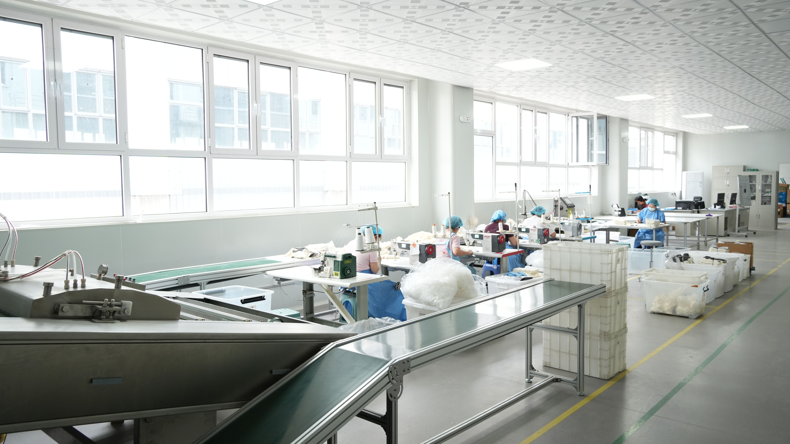

Gestión y Planificación de la Producción
¿Qué es la gestión de la producción?
La gestión de la producción es el conjunto de procesos mediante los cuales una empresa planifica, organiza, dirige y controla los recursos (humanos, materiales y tecnológicos) necesarios para transformar materias primas en productos finales. Su objetivo es fabricar las cantidades requeridas, cumpliendo los plazos de entrega y minimizando costos.
Planificación de órdenes, capacidad y recursos
Para evitar el caos en la planta, es vital planificar. Las órdenes de trabajo determinan qué piezas de plástico se van a fabricar y en qué cantidad. La capacidad evalúa si las máquinas tienen el tiempo disponible para cumplir la meta, y la gestión de recursos asegura que haya operadores e insumos listos para el turno de trabajo.
Problemas frecuentes en la planta
- Retrasos: Incumplimiento en las fechas de entrega acordadas con el cliente.
- Cuellos de botella: Una etapa del proceso (como el enfriamiento de moldes) es más lenta que las demás, acumulando trabajo y frenando la línea.
- Tiempos muertos: Periodos en los que las máquinas o los operarios no están produciendo por falta de material o averías.
Ejemplos de aplicación industrial
- Programación de turnos escalonados para mantener las inyectoras operando 24/7.
- Balanceo de la línea de producción para que la velocidad de extrusión coincida con la velocidad de empaque.
- Implementación de software MRP (Planificación de Requerimientos de Materiales) para calcular la resina exacta a utilizar por semana.

Análisis de Problemas y Soluciones
| Problema | Posibles Causas | Acciones de Mejora |
|---|---|---|
| Retrasos en órdenes | Mala estimación de tiempos, falta de personal. | Cronogramas realistas, capacitación cruzada de operarios. |
| Cuellos de botella | Máquina lenta, inspección tardía. | Adquirir tecnología más rápida, rediseñar el flujo de trabajo. |
| Tiempos muertos | Falta de resina en la tolva, máquina dañada. | Mejorar abastecimiento a pie de máquina, mantenimiento preventivo. |